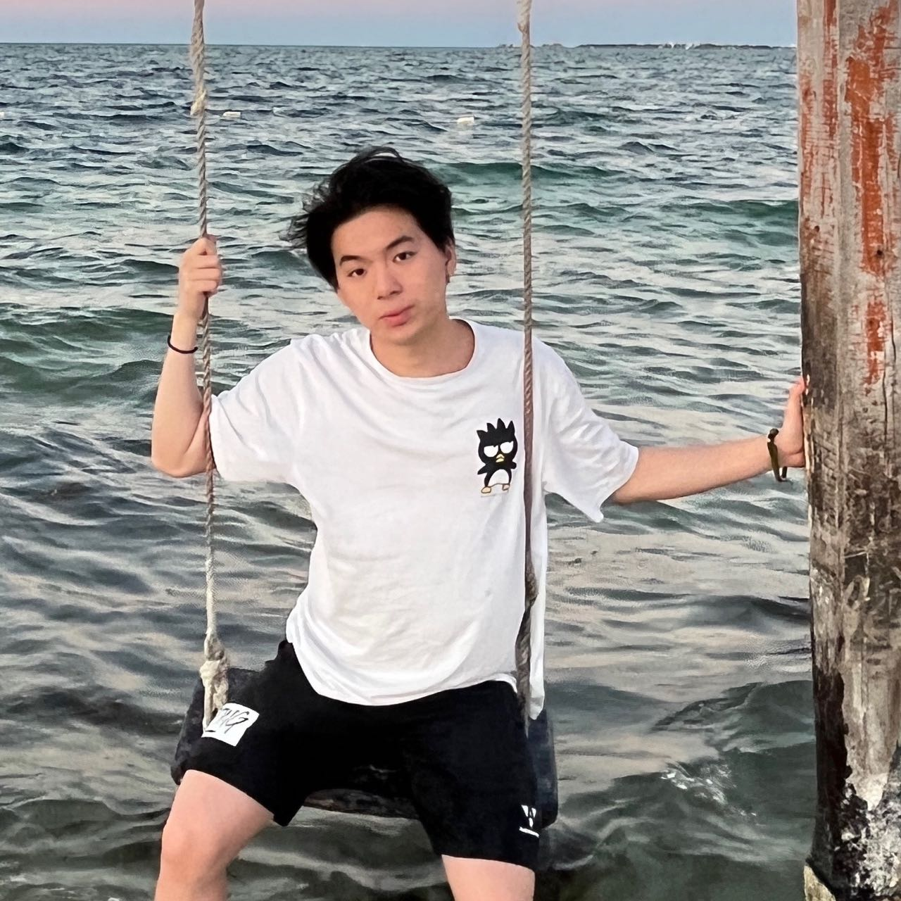

Terry Li
Hello! I'm Terry, a rising junior at Carnegie Mellon University
majoring in Information Systems, and I am interested in
studying Software engineering. I
also have considerable experience with web development, having
worked on front end development at an Ed-tech startup and later build knowledge graph demo
at Carnegie Mellon University School of Computer Science. Currently I'm TAing for the most
popular software engineering class in CMU: Principles of Software Construction: Objects, Design, and Concurrency,
and I'm also taking software engineering classes like:
Software Engineering For Startup,
Foundations Of Software Engineering,
Application Design and Development,
The Softer Side Of Software Engineering.
Through my various projects and
work experiences, I have experience
working with the following programming languages and technologies:
- HTML
- CSS
- JavaScript
- TypeScript
- Bootstrap
- React
- Java
- Python
- SQL
- MongoDB
- PostgreSQL
- Google Cloud
- Standard ML
- REST API